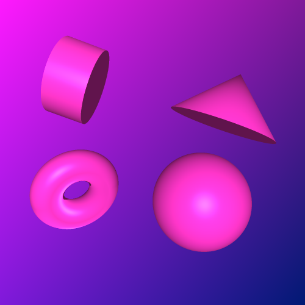
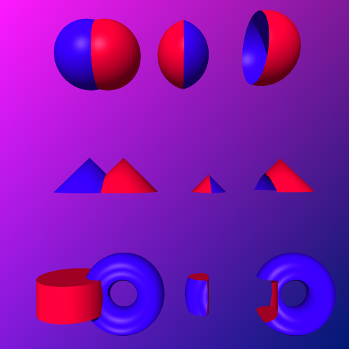
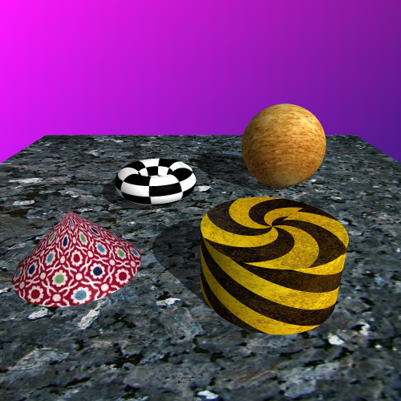
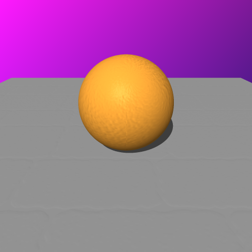
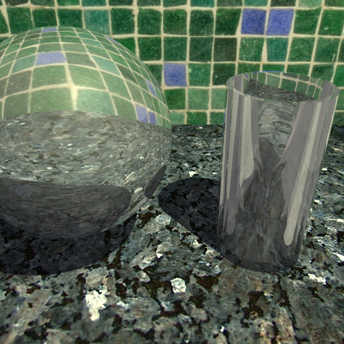
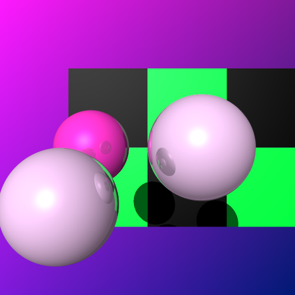
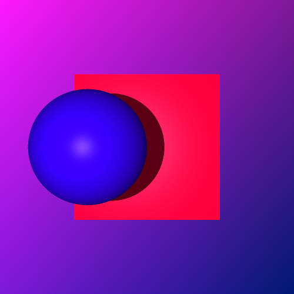
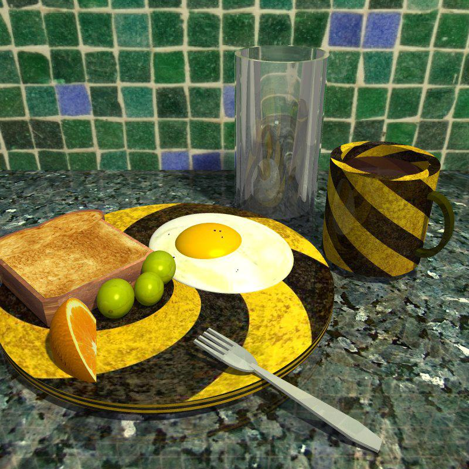

For my final project, I have decided to extend the ray tracer I created for Assignment 4. Some functionality implemented for Assignment 4 includes generating a simple background, rendering spheres, cubes, and meshes, casting secondary rays to display simple shadows, lighting using the Phong lighting model, bounding volumes for meshes, and hierarchical transformations.
The following are the objectives I chose to implement for this project.
Super sampling invloves casting multiple rays per pixel to be displayed, and averaging out the calculated values to determine the final colour of that pixel. This is just one technique that can be used to reduce aliasing. This is simple to implement, and produces much nicer looking images, although the rendering time is increased dramatically. All images for the following objectives have been rendered using this technique.
The cone and cylinder were fairly straightforward, keeping in mind that their equations represent infinite objects, and for these purposes just a portion objects are desired. They also need to include discs where this truncation occurs. The torus was a bit trickier to implement, mainly due to the complexity of the equation, and four roots to solve for as opposed to just two for the other primitives.
Depicted below are the new primitives, plus the sphere from Assignment 4.
I chose this objective because I considered it necessary to create interesting scenes without having to use meshes. It is certainly one of my harder objectives, but it also gives some of the nicest results. I implemented three operations: union, intersection, and difference. I had difficulty implementing these for an arbirtary number of operations and objects, but as long as at each operation, no holes are created, additional operations should look correct. As soon as a hole in an object is created, the results may not be as desired depending on the viewing angle. For this reason, I did not add CSG for toruses specifically, since that would require tedious special cases.
Here are unions, intersections, and differences with some of the primitives I have created.
This was a particulary fun objective. After fiddling around with various source images, I enjoyed seeing even my basic scenes appear much more interesting and realistic. There was quite a bit of code refactoring required for this obective, so first I implemented a basic solid checker texture. Although this isn't very useful for my final scene, it does produce a neat effect, and allowed me to verify my code was set up correctly before integrating image reading.
Here are some textures mapped onto the basic primitives. Notice how even the silly textures add quite a different look to the scene.
I thought this objective would be simple after getting texture mapping set up, I was wrong! While the concept of changing the appearance of the surface based on an image is similar, bump mapping involved changing the surface normal of the surface based on an image. I ended up having to refactor my intersection routines again to accomodate this.
Using bump maps below. The map on the sphere is a simlated orange peel, while the ground is meant to appear as bricks. Notice that although the shading of these surfaces reflects the "bumps", the shadows and silhouettes are not correct. This is expected with bump mapping since the object's geometry is not being manipulated.
Unfortunately, I did not complete this objective. The idea is to divide the scene into a 3D grid, allowing you to just test ray intersections with objects that are close to the ray. I decided to focus on creating my final scene instead.
I set up transparency to work for reflective objects. This objective is very similar to mirror reflections, but here the refracted angle is based on an index of refraction. These can be found for many common mediums from tables. The technique is otherwise almost identical to reflections, taking into consideration what happens when rays enter an object vs when rays leave the object. The next logical step here would be to add "glossy transparency" - translucency, just like what was done with reflections.
You can see below the transparency. A large sphere, and a "glass" - which is one cylinder subtracted from another. As you can see, my scene is starting to come together. This objective is much easier to visualize with an appropriate background.
This is a really simple way to add realism to rendered images. The basic tecnique is to recursively cast secondary rays from an intersection point on a reflective surface, and blend the colour found with the surface's colour. After restructuring my code to allow recursively casting rays, this was straighforward to implement. Casting these secondary rays does increase rendering time, though for my test images I didn't find it to be dramatically slower.
The spheres in the image below are reflective. The light spheres have higher reflection than the dark pink sphere. This works for the other primitives as well, but the reflections are easier to predict on spheres. The cubes in the background have just been included as "extra things" to reflect.
This seems like the next logical step after mirror reflections, although surprisingly it came quickly after I figured out bump mapping. Glossy reflections are achieved using distributed ray tracing. The idea is to cast multiple rays "around" the reflected direction, and average the values found to determine the reflection colour. The direction of these rays is determined by randomly generating offsets from the mirror reflected direction. I used a Gaussian distibution to determine these offsets, parameterizing by the standard deviation.
Using the same scene as Objective 7, glossy and glossier reflections are shown below. Just generating one of these images took over 18 minutes compared to 81 seconds for mirror reflections! I'm starting to regret my choice not to complete the efficiency objective.

The shadows implemented for Assignment 4 are very basic. The lights we used are point light sources, which isn't very realistic. To accomplish soft shadows, I added a new type of light - area lights. Instead of a random sampling method (as used for glossy reflections), I parameterized the area light on size and density, then when looking for shadows, I uniformly sample the area light, and average out these values to determine the shadow at any point on a surface.
Below you can see a shadow cast from a point light source, followed by a soft shadow cast by an area light source. It does create a very nice and realistic effect. The first image was generated in 33 seconds, while the second took over 6 minutes.
The final scene was a lot of fun to make. It started because I wanted to make eggs. The scene largely relies on texture mapping. I did end up using a bump map for the orange peel. Most of these textures were found on google, except for the grapes, which I made using GIMP. Most surfaces have at least subtle reflection. Transparency is obvious in the glass, but I also used it for the coffee in the mug, and very slightly for the grapes.
I was hoping to be able to add more food, but the time to render even my test images was becoming unreasonable. The scene below, without glossy shadows or area lights, and missing reflections on post surfaces took almost two hours to render, without super sampling. Clearly I would be waiting a long time for an image if I added more food.
In the end, I am still quite please with my image. Total rendering time was around 40 hours.
